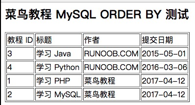

Sentencia MySQL ORDER BY (ordenación)
Sabemos que desde la tabla MySQL se usaSELECTla sentencia para leer datos.
Si necesitamos ordenar los datos leídos, podemos usar la cláusula de MySQLORDER BYpara especificar por qué campo y de qué manera deseas ordenar, y luego devolver los resultados de la búsqueda.
MySQL ORDER BY (ordenación)La sentencia puede ordenar por valores de una o más columnas de forma ascendente (ASC) o descendente (DESC).
Sintaxis
La siguiente es la sentencia SELECT que usaORDER BYla cláusula para ordenar los datos consultados y luego devolverlos:
SELECT column1, column2, ... FROM table_name ORDER BY column1 [ASC | DESC], column2 [ASC | DESC], ...;
Descripción de parámetros:
column1,column2, ... son los nombres de las columnas que deseas seleccionar. Si usas*indica seleccionar todas las columnas.table_namees el nombre de la tabla de la que deseas consultar datos.ORDER BY column1 [ASC | DESC], column2 [ASC | DESC], ...es la cláusula utilizada para especificar el orden de clasificación.ASCindica orden ascendente (por defecto),DESCindica orden descendente.
Más explicaciones:
- Puedes usar cualquier campo como condición de ordenación para devolver los resultados ordenados.
- Puedes configurar múltiples campos para ordenar.
- Puedes usar las palabras clave ASC o DESC para establecer si los resultados de la consulta se ordenan de forma ascendente o descendente. Por defecto, se ordenan de forma ascendente.
- Puedes agregar la cláusula WHERE...LIKE para establecer condiciones.
Ejemplos
A continuación se muestran algunos ejemplos de uso de la cláusula ORDER BY.
1. Ordenación por una sola columna:
SELECT * FROM products ORDER BY product_name ASC;
La sentencia SQL anterior seleccionará todos los productos de la tabla de productos products y los ordenará por nombre de producto de forma ascendente ASC.
2. Ordenación por múltiples columnas:
SELECT * FROM employees ORDER BY department_id ASC, hire_date DESC;
La sentencia SQL anterior seleccionará todos los empleados de la tabla de empleados employees, y los ordenará primero por ID de departamento de forma ascendente ASC, y luego dentro del mismo departamento por fecha de contratación de forma descendente DESC.
3. Usar números para indicar la posición de la columna:
SELECT first_name, last_name, salary FROM employees ORDER BY 3 DESC, 1 ASC;
La sentencia SQL anterior seleccionará las columnas de nombre y salario de la tabla de empleados employees, y las ordenará por la tercera columna (salary) de forma descendente DESC, y luego por la primera columna (first_name) de forma ascendente ASC.
4. Ordenar usando expresiones:
SELECT product_name, price * discount_rate AS discounted_price FROM products ORDER BY discounted_price DESC;
La sentencia SQL anterior seleccionará el nombre del producto y el precio con descuento calculado según la tasa de descuento de la tabla de productos products, y las ordenará por el precio con descuento de forma descendente DESC.
5. A partir de la versión MySQL 8.0.16, puedes usar NULLS FIRST o NULLS LAST para manejar valores NULL:
SELECT product_name, price FROM products ORDER BY price DESC NULLS LAST;
La sentencia SQL anterior seleccionará el nombre y el precio de los productos de la tabla de productos products, y los ordenará por precio de forma descendente DESC, colocando los valores NULL al final.
Por el contrario, si deseas que los valores NULL aparezcan primero, puedes escribir:
SELECT product_name, price FROM products ORDER BY price DESC NULLS FIRST;
La cláusula ORDER BY es una herramienta poderosa que puede ordenar los resultados de la consulta según diferentes necesidades comerciales. En aplicaciones prácticas, presta atención a seleccionar las columnas y el orden de clasificación adecuados para obtener el efecto de ordenación esperado.
Usar la cláusula ORDER BY en el símbolo del sistema
A continuación se usará la cláusula ORDER BY en la sentencia SELECT para leer los datos de la tabla MySQL runoob_tbl:
Ejemplos
Prueba los siguientes ejemplos; los resultados se ordenarán de forma ascendente y descendente.
Ordenación SQL
Lee todos los datos de la tabla runoob_tbl y ordénalos de forma ascendente por el campo submission_date.
Usar la cláusula ORDER BY en scripts de PHP
Puedes usar la función de PHP mysqli_query() y el mismo comando SELECT con la cláusula ORDER BY para obtener datos.
Esta función se utiliza para ejecutar comandos SQL, y luego a través de la función de PHP mysqli_fetch_array() se muestran todos los datos consultados.
Ejemplos
Prueba el siguiente ejemplo; los datos consultados se devuelven ordenados de forma descendente por el campo submission_date.
Prueba de MySQL ORDER BY:
El resultado se muestra en la siguiente figura:

argyi
150***62378@163.com
Ordenación en MySQL. Sabemos que desde una tabla MySQL se usa la sentencia SQL SELECT para leer:
Ordenación por pinyin en MySQL
Si el conjunto de caracteres es gbk (conjunto de caracteres de codificación de caracteres chinos), simplemente agrega ORDER BY al final de la sentencia de consulta:
Si el conjunto de caracteres es utf8 (codificación universal), primero debes transcodificar el campo y luego ordenar:
argyi
150***62378@163.com